BHHB Support Ordinateur Portable
Support PC réglable en hauteur sur 6 niveaux, fabriqué en aluminium ventilé pour un refroidissement efficace. Compatible avec MacBook, HP, iPad et laptops de 9 à 17 pouces. Ergonomique, léger et robuste pour améliorer posture et performance.
Voir l'offre

Laptop Ultra Fin Acer Aspire 3 – Puissance et Confort pour Tous Vos Usages
Découvrez l’Acer Aspire 3 A317-55P-C8DB, un ordinateur portable 17,3 pouces Full HD IPS idéal pour le travail, les études et le divertissement. Équipé d’un processeur Intel Celeron N100, 4 Go de RAM et un SSD rapide de 128 Go, ce laptop allie performance et réactivité dans un design élégant gris.
Un compagnon fiable pour une expérience fluide sous Windows 11 Famille.
📦 Ce que ce laptop vous apporte :
🔍 Écran large et net : 17,3” Full HD avec dalle IPS pour des couleurs vives et un grand angle de vue
🚀 Performance équilibrée : Intel Celeron N100, 4 Go RAM et SSD 128 Go pour un démarrage et un multitâche rapides
⌨️ Confort d’utilisation : Clavier AZERTY adapté aux besoins francophones
🎨 Design moderne : Finition grise sobre et élégante, facile à transporter
💻 Système à jour : Windows 11 Famille pour une interface moderne et sécurisée
➡️ Le choix parfait pour allier productivité et confort d’usage au quotidien, que ce soit au bureau, à la maison ou en mobilité.
Voir l'offre

Laptop Ultra Fin Dell Inspiron 15 3535 – Performance et Élégance pour un Usage Quotidien
Découvrez le Dell Inspiron 15 3535, un ordinateur portable 15,6 pouces Full HD (1920 x 1080) conçu pour allier puissance et mobilité. Équipé d’un processeur AMD Ryzen 5 7520U, de 8 Go de RAM et d’un SSD rapide de 512 Go, ce laptop offre une expérience fluide et réactive pour le travail, le divertissement et le multitâche.
Son design noir sobre et son clavier AZERTY français en font un compagnon idéal pour tous vos besoins informatiques.
📦 Ce que ce Dell Inspiron vous offre :
🔍 Écran Full HD 15,6” pour une qualité d’image nette et immersive
🚀 Processeur AMD Ryzen 5 7520U performant pour gérer facilement vos applications
🎮 Graphiques AMD Radeon intégrés pour une expérience visuelle fluide
💾 Mémoire RAM de 8 Go et SSD de 512 Go pour rapidité et stockage optimisés
⌨️ Clavier AZERTY français confortable pour une saisie précise
💻 Windows 11 Home préinstallé pour une interface moderne et sécurisée
➡️ Un choix idéal pour les utilisateurs recherchant puissance, polyvalence et style au quotidien.
Voir l'offre

Laptop Ultra Fin Dell Inspiron 16 5645 – Puissance et Élégance pour les Utilisateurs Exigeants
Découvrez le Dell Inspiron 16 5645, un ordinateur portable 16 pouces FHD+ conçu pour offrir performance et confort visuel. Équipé d’un puissant processeur AMD Ryzen 7-8840U, de 16 Go de RAM et d’un SSD de 1 To, il assure une fluidité exceptionnelle pour le multitâche, la création et le divertissement.
Son design élégant en coloris Indigo et son clavier rétroéclairé AZERTY français vous accompagnent partout, même dans les environnements peu éclairés.
📦 Ce que ce Dell Inspiron 16 5645 vous offre :
🔍 Écran 16’’ Full HD+ pour une image plus large et détaillée
🚀 Processeur AMD Ryzen 7-8840U puissant pour une productivité sans compromis
💾 16 Go de RAM et 1 To de SSD pour un stockage rapide et une gestion multitâche optimale
🎨 Graphique AMD UMA intégré pour des performances graphiques fluides
⌨️ Clavier rétroéclairé AZERTY français, parfait pour travailler dans toutes les conditions
💻 Windows 11 Home pour une expérience utilisateur moderne et sécurisée
➡️ Le choix parfait pour ceux qui recherchent un laptop performant, design et fonctionnel au quotidien.
Voir l'offre

Laptop Ultra Fin Dell XPS 13 (9340) – Performance et Élégance dans un Format Compact
Découvrez le Dell XPS 13 (9340), un ordinateur portable 13,4" doté d’un écran FHD+ 120 Hz ultra fluide pour une expérience visuelle exceptionnelle. Propulsé par un processeur Intel Core Ultra 7 Series de la gamme Intel Evo, avec 32 Go de RAM et un SSD de 1 To, ce laptop allie puissance et rapidité pour répondre aux besoins des professionnels exigeants et des créateurs.
Son design premium Platinum et son clavier rétroéclairé AZERTY offrent confort et style, même dans les environnements à faible luminosité.
📦 Ce que ce Dell XPS 13 (9340) vous apporte :
🔥 Écran 13,4" FHD+ avec un taux de rafraîchissement de 120 Hz pour une fluidité visuelle remarquable
🚀 Processeur Intel Core Ultra 7 Series (Intel Evo Edition) pour des performances haut de gamme
💾 32 Go de RAM et SSD 1 To pour un multitâche fluide et un stockage rapide
🎨 Carte graphique Intel Arc intégrée pour un rendu graphique optimisé
⌨️ Clavier rétroéclairé AZERTY français, parfait pour travailler de jour comme de nuit
💻 Windows 11 Home pour une interface moderne et sécurisée
➡️ Un choix d’exception pour ceux qui veulent allier mobilité, puissance et design.
Voir l'offre

Écran Portable Ultra Fin Dell P1424H 14" Full HD – Mobilité et Qualité d’Image Optimale
Découvrez le Dell P1424H, un écran portable 14 pouces Full HD (1920x1080) conçu pour accompagner les professionnels et les nomades digitaux dans leurs déplacements. Grâce à sa dalle IPS, sa fréquence de 60Hz et son temps de réponse de 6ms, il offre une image nette, fluide et fidèle, idéale pour le télétravail, les présentations ou le divertissement.
Son design ultra fin et léger en finition argent facilite son transport, tandis que ses 2 ports USB-C garantissent une connectivité rapide et simplifiée. Bénéficiez également de la tranquillité d’esprit avec une garantie constructeur de 3 ans.
📦 Ce que vous apporte le Dell P1424H :
🔍 Écran 14" Full HD (1920x1080) avec dalle IPS pour des couleurs précises et un large angle de vision
⚡ Fréquence de rafraîchissement 60Hz et temps de réponse rapide de 6ms pour une expérience visuelle fluide
🔌 Deux ports USB-C pour un branchement facile et rapide sans adaptateurs supplémentaires
🧳 Design ultra fin et léger, parfait pour la mobilité
🛡️ Garantie constructeur Dell de 3 ans pour une fiabilité assurée
➡️ Un choix idéal pour les utilisateurs mobiles à la recherche d’un écran portable performant et pratique.
Voir l'offre

Laptop Ultra Fin Acer Aspire Go 14 AG14-31P-3142 – Performance et Mobilité au Quotidien
Découvrez l’Acer Aspire Go 14, un ordinateur portable 14 pouces avec écran WUXGA IPS qui allie élégance, légèreté et puissance. Équipé d’un processeur Intel Core i3-N305, de 8 Go de RAM et d’un SSD rapide de 512 Go, ce laptop est conçu pour répondre efficacement à vos besoins professionnels et personnels, tout en offrant une excellente qualité d’affichage.
Son clavier AZERTY français et son design gris moderne en font un compagnon idéal pour le travail, les études et les loisirs, où que vous soyez.
📦 Ce que vous offre l’Acer Aspire Go 14 :
🔍 Écran 14" WUXGA IPS pour des images claires, nettes et des couleurs précises
⚡ Processeur Intel Core i3-N305 performant pour une utilisation multitâche fluide
💾 8 Go de RAM et SSD de 512 Go pour un stockage rapide et une réactivité optimale
🔌 Graphiques Intel UHD intégrés pour une expérience visuelle agréable au quotidien
⌨️ Clavier AZERTY français confortable pour une saisie efficace
🧳 Design ultra fin et léger, parfait pour la mobilité et le transport
➡️ Un laptop polyvalent qui combine puissance, portabilité et style pour accompagner toutes vos journées.
Voir l'offre

Support Laptop Ultra Pratique Pyle – Confort et Ergonomie pour Votre Poste de Travail
Découvrez le support ordinateur portable Pyle, conçu pour améliorer votre confort et votre posture lors de l’utilisation de votre laptop ou iPad. Ce support de table debout offre un angle réglable et une hauteur pliable pour s’adapter parfaitement à vos besoins, tout en garantissant stabilité et sécurité grâce à son plateau antidérapant à quatre branches.
Idéal pour le télétravail, les études ou le gaming, il vous permet de travailler plus longtemps sans fatigue.
📦 Ce que vous offre le support Pyle :
🔧 Réglage facile de l’angle pour un positionnement ergonomique optimal
📏 Hauteur pliable et ajustable pour une adaptabilité maximale
🛡️ Plateau antidérapant à quatre branches assurant stabilité et maintien sécurisé
💼 Compatible avec tous les ordinateurs portables et tablettes, y compris iPad
🧳 Design compact et portable, facile à transporter et à ranger
➡️ Un accessoire indispensable pour travailler confortablement partout, tout en protégeant votre dos et vos épaules.
Voir l'offre

Lot de 2 Protège-Écrans Anti Lumière Bleue 15.6" – Protection Optimale pour Votre Laptop
Protégez efficacement l’écran de votre ordinateur portable avec ce pack de 2 protège-écrans 15,6 pouces au format 16:9, spécialement conçus pour réduire la lumière bleue nocive tout en préservant la clarté de l’image. Compatible avec les modèles HP, Dell, Acer, Lenovo, ThinkPad et ASUS, ce filtre protège votre écran des rayures et prolonge sa durée de vie.
Idéal pour les professionnels, étudiants et gamers soucieux de leur confort visuel et de la durabilité de leur équipement.
📦 Ce que vous offre ce lot de protège-écrans :
🛡️ Réduction efficace de la lumière bleue pour protéger vos yeux et réduire la fatigue visuelle
🔍 Haute transparence pour une image nette et fidèle
🚫 Protection contre les rayures, traces de doigts et poussières
🎯 Compatibilité large avec de nombreuses marques et modèles d’ordinateurs portables 15,6 pouces
💼 Facile à installer et à nettoyer
➡️ Une solution simple et pratique pour préserver votre vision et l’état de votre laptop au quotidien.
Voir l'offre

Écran Portable MSI Pro MP161 E2U 15,6" Full HD – Confort Visuel et Mobilité Optimale
Découvrez le MSI Pro MP161 E2U, un écran portable 15,6 pouces Full HD (1920 x 1080) avec dalle IPS offrant des couleurs précises et un large angle de vue. Conçu pour préserver vos yeux grâce à ses technologies anti-fatigue visuelle, cet écran 60 Hz est parfait pour les professionnels en déplacement, étudiants et nomades digitaux.
Avec ses multiples options de connexion, notamment Mini-HDMI 2.0b et 2 ports USB Type-C, il garantit une compatibilité simple et rapide avec vos appareils.
📦 Ce que cet écran portable vous apporte :
👁️ Confort visuel avancé : écran respectueux des yeux pour réduire la fatigue oculaire
🔄 Image nette et fluide : résolution Full HD avec dalle IPS et fréquence 60 Hz
🔌 Connectivité polyvalente : Mini-HDMI 2.0b et double USB Type-C pour brancher facilement ordinateurs et mobiles
🧳 Design léger et portable, idéal pour travailler en mobilité
🌟 Intégration d’haut-parleurs pour une expérience multimédia complète
➡️ Un choix idéal pour améliorer votre productivité avec un écran secondaire performant et facile à transporter.
Voir l'offre

Samsung Galaxy Book4 – Laptop Ultra Fin 15,6" Puissant et Élégant
Découvrez le Samsung Galaxy Book4, un ordinateur portable 15,6 pouces alliant performance et design moderne. Équipé d’un processeur Intel Core i5, 8 Go de RAM et un SSD rapide de 256 Go, il offre une expérience fluide et réactive pour le travail, les études ou le divertissement.
Son écran large et lumineux, associé à un clavier AZERTY français, garantit confort et efficacité au quotidien.
📦 Ce que ce laptop vous offre :
⚡ Performances solides : Processeur Intel Core i5 et 8 Go de RAM pour multitâche fluide
🚀 Stockage rapide : SSD de 256 Go pour un démarrage et des chargements rapides
🎨 Affichage net : écran 15,6" offrant une qualité visuelle immersive
⌨️ Clavier AZERTY français ergonomique pour une saisie confortable
🎨 Design sobre et élégant en gris anthracite, parfait pour un usage professionnel et personnel
➡️ Parfait pour ceux qui cherchent un ordinateur portable polyvalent, puissant et facile à transporter.
Voir l'offre

ASUS Zenbook Duo UX8406CA – Laptop Ultra Fin 14" 3K OLED Double Écran Hautes Performances
Découvrez l’ASUS Zenbook Duo UX8406CA, un ordinateur portable innovant avec un écran principal 14 pouces 3K OLED 120Hz tactile, et un second écran ScreenPad Plus pour booster votre productivité. Équipé d’un puissant processeur Intel Core Ultra 9 à 2,9 GHz, 32 Go de RAM LPDDR5X et 1 To de SSD ultra rapide, il est parfait pour les professionnels créatifs, développeurs et utilisateurs exigeants.
Un concentré de technologie pour une expérience fluide, immersive et multitâche sans compromis.
📦 Ce que ce laptop vous offre :
🚀 Performance extrême : Intel Core Ultra 9, 32 Go RAM LPDDR5X, 1 To SSD pour un travail intensif
🎨 Écran principal 14" 3K OLED tactile à 120 Hz pour une qualité d’image exceptionnelle
🖥️ ScreenPad Plus : second écran tactile pour multitâche amélioré et productivité accrue
🎮 Graphiques Intel Arc pour une expérience visuelle fluide et précise
⌨️ Clavier AZERTY français ergonomique, idéal pour la saisie professionnelle
💻 Windows 11 Home préinstallé pour une interface moderne et sécurisée
➡️ L’ordinateur portable ultime pour ceux qui veulent allier innovation, puissance et mobilité.
Voir l'offre

Lenovo IdeaPad Slim 3 14IRH8 – Laptop Ultra Fin 14" Full HD Puissant et Élégant
Découvrez le Lenovo IdeaPad Slim 3 14 pouces, un ordinateur portable fin et léger qui allie performance et style. Équipé d’un processeur Intel Core i7-13620H, de 16 Go de RAM et d’un SSD rapide de 512 Go, il assure une expérience fluide pour le travail, les études et le divertissement. Son écran Full HD offre une image nette et immersive, tandis que Windows 11 Home garantit une interface moderne et sécurisée.
Un choix idéal pour les utilisateurs exigeants qui recherchent puissance et mobilité au quotidien.
📦 Ce que ce laptop vous offre :
⚡ Processeur Intel Core i7-13620H pour une performance multitâche efficace
🔋 16 Go de RAM et SSD 512 Go pour rapidité et stockage optimisé
🌟 Écran 14" Full HD avec technologie IPS pour des couleurs vives et un large angle de vue
🎨 Graphiques Intel UHD pour un affichage fluide et clair
⌨️ Clavier AZERTY français confortable pour une frappe précise
💻 Windows 11 Home préinstallé, prêt à l’emploi dès la sortie de la boîte
🎨 Design fin et élégant en gris, parfait pour une utilisation mobile
➡️ Parfait pour les professionnels, étudiants et créatifs qui veulent un laptop fiable et performant partout où ils vont.
Voir l'offre

Xiaomi Redmi Pad Pro – Tablette Puissante et Élégante 12,1" Bleu
Découvrez la Xiaomi Redmi Pad Pro, une tablette moderne alliant performance et design raffiné. Équipée de 6 Go de RAM et 128 Go de stockage, elle offre une expérience fluide pour le multimédia, la productivité et les jeux.
✨ Caractéristiques clés :
Écran large de 12,1 pouces pour une immersion totale
Performances solides grâce à une configuration 6 Go RAM et 128 Go de stockage
Design élégant en bleu, parfait pour allier style et praticité
Classe énergétique A pour une consommation optimisée
➡️ Idéale pour les utilisateurs recherchant puissance, mobilité et élégance dans une tablette polyvalente.
Voir l'offre

Samsung X210N Galaxy Tab A9+ 11
Découvrez la Xiaomi Redmi Pad Pro, une tablette au design fin et moderne, équipée d’un écran 12,1 pouces (30,5 cm) offrant une expérience visuelle immersive. Avec sa mémoire 6 Go RAM et son stockage de 128 Go, elle est idéale pour le divertissement, la productivité et la mobilité. Classée en efficacité énergétique A, elle allie performance et économie d’énergie pour une utilisation prolongée.
📦 Ce que cette tablette vous offre :
🌟 Grand écran 12,1" pour une image nette et colorée
⚡ 6 Go de RAM pour une navigation fluide et multitâche efficace
💾 Stockage généreux de 128 Go pour toutes vos applications, photos et vidéos
🔋 Classe énergétique A pour une meilleure autonomie et respect de l’environnement
🎨 Design élégant en bleu, parfait pour un usage quotidien mobile
➡️ La Xiaomi Redmi Pad Pro est parfaite pour ceux qui veulent allier puissance, confort visuel et mobilité dans une tablette compacte.
Voir l'offre

Rainbow Six Siege – Jeu PC d’Action Stratégique en Édition Digitale
Plongez dans l’univers intense de Rainbow Six Siege, un jeu de tir tactique multijoueur incontournable sur PC. Ce code de téléchargement vous offre un accès rapide et sécurisé pour rejoindre des combats stratégiques où la coopération et la précision font la différence.
📦 Ce que ce jeu vous propose :
⚔️ Combats en équipe intenses et stratégiques
🎯 Gameplay dynamique avec des opérateurs aux compétences uniques
🌍 Modes multijoueur variés pour des parties compétitives et passionnantes
💻 Compatible PC avec installation facile grâce au code inclus dans la boîte
➡️ Rainbow Six Siege est le choix parfait pour les gamers qui recherchent un défi tactique et une expérience multijoueur captivante sur PC.
Voir l'offre

Battlefield 3 – Jeu de Tir à la Première Personne PC, Action Intense et Multijoueur
Plongez au cœur des combats modernes avec Battlefield 3, un jeu FPS immersif qui offre des batailles explosives et stratégiques. Profitez d’une expérience visuelle impressionnante et de modes multijoueur passionnants pour des heures de jeu intenses sur PC.
📦 Ce que Battlefield 3 vous offre :
🔥 Graphismes réalistes et effets sonores immersifs
⚔️ Combats en équipe tactiques et dynamiques
🚁 Large choix de véhicules et armes pour varier les stratégies
🌍 Modes solo et multijoueur pour une expérience complète
➡️ Un incontournable pour les passionnés de jeux de guerre modernes et d’action sur PC.
Voir l'offre

FIFA 23 Standard Edition – Jeu de Football PC, Expérience Réaliste et Multijoueur
Plongez dans l’univers du football avec FIFA 23 Standard Edition pour PC Windows. Profitez d’un gameplay fluide, d’une modélisation réaliste des joueurs et de modes multijoueur compétitifs pour des heures de matchs passionnants.
📦 Ce que FIFA 23 vous offre :
⚽ Graphismes haute définition et animations réalistes
🤝 Modes en ligne et multijoueur pour défier vos amis
🏆 Divers championnats officiels et équipes licenciées
🎮 Interface en français pour une immersion totale
➡️ Un must-have pour tous les amateurs de football et gamers PC à la recherche d’une expérience authentique.
Voir l'offre

New World – Rise of the Angry Earth (DLC) pour PC
Découvrez l’extension « Rise of the Angry Earth » de New World, disponible en téléchargement PC via code Steam. Plongez dans de nouvelles aventures épiques, explorez des territoires inédits et profitez de contenus exclusifs pour enrichir votre expérience de jeu.
📦 Ce que ce DLC vous apporte :
🌍 Nouveaux environnements et quêtes immersives
⚔️ Armes, équipements et compétences exclusives
🎯 Compatible avec la version originale de New World sur Steam
💻 Téléchargement rapide et sécurisé via code
➡️ Un ajout incontournable pour tous les joueurs passionnés de New World cherchant à prolonger leur aventure.
Voir l'offre

Lenovo Tab M11 – Tablette Tactile 11'' WUXGA Puissante et Polyvalente
Découvrez la Lenovo Tab M11, une tablette tactile 11 pouces au format WUXGA idéale pour le divertissement, la productivité et la mobilité. Équipée d’un processeur MediaTek Helio G88 à 8 cœurs, 4 Go de RAM et 128 Go de stockage eMMC, elle offre des performances fluides sous Android 13.
Parfaite pour le multimédia, la lecture, la navigation et la prise de notes avec son stylet Tab Pen (vendu séparément). Son design élégant en gris allie style et praticité.
📦 Ce que cette tablette vous offre :
🔋 Processeur performant MediaTek Helio G88 8 cœurs pour une expérience rapide
🖥️ Écran 11'' WUXGA pour une image nette et confortable
💾 4 Go RAM et 128 Go eMMC pour stocker toutes vos applications et fichiers
📱 Android 13 avec connectivité WiFi et Bluetooth intégrée
✍️ Compatible Tab Pen pour la créativité et la productivité
➡️ Un compagnon idéal pour vos loisirs et votre travail en mobilité.
Voir l'offre

Lenovo Tab Plus 11.5’’ – Tablette Tactile 2K Full HD Puissante et Immersive
Découvrez la Lenovo Tab Plus 11.5 pouces, une tablette tactile avec écran 2K Full HD qui offre une qualité d’image exceptionnelle et un son immersif grâce à la technologie Dolby Atmos et les haut-parleurs JBL intégrés. Équipée du processeur Mediatek G99, 8 Go de RAM et 128 Go de stockage eMMC, elle assure fluidité et rapidité sous Android 14.
Parfaite pour le divertissement, la productivité et la créativité, avec une connectivité WiFi et Bluetooth avancée dans un design élégant Luna Grey.
📦 Ce que cette tablette vous apporte :
🖥️ Écran 11.5’’ 2K Full HD pour une image claire et détaillée
🔊 Son Dolby Atmos avec haut-parleurs JBL pour une expérience audio immersive
⚡ Processeur Mediatek G99 et 8 Go RAM pour une performance optimale
💾 Stockage 128 Go eMMC pour garder toutes vos applications et fichiers
📱 Android 14 avec WiFi et Bluetooth intégrés pour une connectivité complète
🎨 Design Luna Grey élégant et moderne
➡️ La tablette idéale pour profiter pleinement de vos contenus multimédia et rester productif en toute mobilité.
Voir l'offre
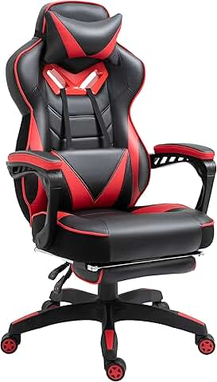
Vinsetto – Chaise Gaming Ergonomique avec Repose-Pied
Fauteuil de Bureau Confort avec Appuie-Tête, Coussin Lombaire et Hauteur Réglable – Noir & Rouge 🎮🖥️
Alliez performance, confort et style avec la chaise gaming ergonomique Vinsetto. Conçue pour les longues sessions de jeu ou de travail, elle est dotée d’un repose-pied escamotable, d’un appuie-tête ajustable et d’un coussin lombaire pour un maintien optimal. Son design noir et rouge affirmé s’intègre parfaitement à un setup gaming ou professionnel moderne.
Une assise pensée pour l’endurance, le confort et le style.
Caractéristiques clés :
🪑 Dossier ergonomique pour un bon maintien du dos
🦵 Repose-pied intégré pour soulager les jambes
🛏️ Appuie-tête et coussin lombaire amovibles pour plus de confort
🎚️ Hauteur réglable pour s’adapter à votre bureau ou poste de jeu
🌀 Base pivotante à 360° avec roulettes pour plus de mobilité
🎨 Design dynamique noir et rouge au look gaming affirmé
Une chaise pensée pour ceux qui passent des heures devant l’écran… sans jamais négliger leur confort.
Voir l'offre
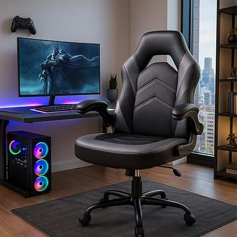
DUMOS – Chaise Gaming Ergonomique Pivotante
Fauteuil Gamer en Cuir Synthétique avec Accoudoirs Pliables – Pour Bureau ou Maison – Noir & Gris 🕹️🪑
Profitez d’un confort optimal pendant vos sessions de jeu ou de travail avec la chaise de gaming DUMOS. Son design ergonomique, son revêtement en cuir synthétique élégant, et ses accoudoirs pliables en font un fauteuil pratique, confortable et facile à intégrer dans n’importe quel espace. Idéale aussi bien pour le bureau que pour le coin gaming.
Un style sobre, une assise confortable, et une fonctionnalité au quotidien.
Caractéristiques clés :
🧍♂️ Dossier ergonomique pour une posture correcte et sans fatigue
↕️ Siège pivotant à 360° avec hauteur réglable
🪑 Accoudoirs rabattables pour un gain de place et plus de liberté
🧽 Revêtement en cuir synthétique facile à nettoyer
🎨 Coloris noir et gris pour un look moderne et professionnel
🏠 Parfaite pour la maison comme pour le bureau
Une chaise polyvalente et confortable, pensée pour durer et s’adapter à vos besoins.
Voir l'offre
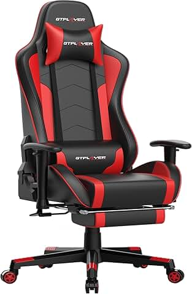
GTPLAYER Chaise Gaming Repose-Pieds Haut-Parleur Bluetooth Fauteuil Gamer Gris Siège Ergonomique (Rouge)
Fauteuil Gamer Ergonomique avec Son Intégré, Confort Maximisé – Coloris Rouge 🎮🔊
Transformez vos sessions de jeu en véritable expérience immersive avec la chaise gaming GTPLAYER. Dotée d’un système audio Bluetooth intégré, d’un repose-pied escamotable et d’un design ergonomique, elle allie confort et technologie pour les gamers exigeants. Sa structure robuste et son look racing rouge donnent du style à votre setup tout en prenant soin de votre posture.
Le mix parfait entre confort, style et immersion sonore.
Caractéristiques clés :
🔊 Haut-parleur Bluetooth intégré pour une ambiance sonore réaliste
🛏️ Repose-pied extensible pour des pauses bien méritées
🪑 Dossier ergonomique pour un soutien optimal du dos et de la nuque
🎮 Parfait pour le gaming, le streaming ou le télétravail
🎨 Design racing rouge dynamique pour un look pro-gamer
↔️ Siège pivotant à 360°, hauteur réglable, accoudoirs confortables
Une chaise pensée pour le confort longue durée… avec le son en bonus 🎧🔥
Voir l'offre
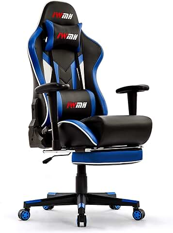
Intimate WM Heart – Chaise Gaming Ergonomique avec Repose-Pieds
Fauteuil Gamer Style Racing avec Appuie-Tête, Accoudoirs Réglables et Support Lombaire – Bleu 🎮🪑
Alliez confort, performance et design sportif avec la chaise gaming Intimate WM Heart. Pensée pour les longues sessions de jeu ou de travail, elle offre une assise ergonomique, un repose-pied extensible, un support lombaire et un appuie-tête rembourré pour un maintien parfait. Son style racing et sa finition bleue donnent du caractère à votre espace gaming ou bureau.
Une assise complète pour booster votre confort et votre productivité.
Caractéristiques clés :
🛏️ Repose-pieds escamotable pour se détendre entre deux parties
🧍♂️ Dossier ergonomique avec coussin lombaire intégré
🧠 Appuie-tête rembourré pour soulager la nuque
🦾 Accoudoirs réglables pour s’adapter à votre posture
🌀 Siège pivotant à 360° avec hauteur ajustable
🎨 Design racing bleu vif pour un look gamer affirmé
La chaise idéale pour les gamers et travailleurs exigeants en quête de confort et de style.
Voir l'offre

Harry Potter – Chaise Gaming ou de Bureau pour Enfant
Fauteuil Gamer Pop à Bascule, Ergonomique, avec Appuie-Tête, Accoudoirs et Hauteur Réglable ⚡🧙♂️
Plongez dans l’univers magique de Poudlard avec cette chaise gaming Harry Potter conçue spécialement pour les jeunes sorciers ! Confortable, stylée et pratique, elle dispose d’un dossier ergonomique, d’un mécanisme à bascule, d’un appuie-tête intégré, et de repose-bras fixes. Parfaite pour jouer, lire ou étudier dans une ambiance enchantée !
Un trône magique pour accompagner les apprentis sorciers dans toutes leurs aventures numériques ✨
Caractéristiques clés :
🪄 Design inspiré de l’univers Harry Potter – look pop & original
🧍♂️ Dossier ergonomique pour une bonne posture
🎮 Assise à bascule confortable pour se détendre
🪑 Appuie-tête et accoudoirs intégrés pour un soutien complet
↕️ Hauteur réglable pour s’adapter à la croissance de l’enfant
👧👦 Parfaite pour les enfants fans de gaming et de magie
L’alliance parfaite entre confort, style et magie pour les jeunes gamers.
Voir l'offre
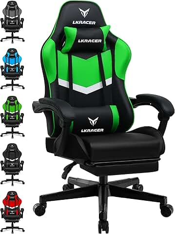
LUCKRACER – Chaise Gaming Ergonomique avec Repose-Pieds
Fauteuil Gamer avec Coussin Lombaire et Oreiller Ajustables, Hauteur Réglable – Support jusqu’à 150 kg 🎮🪑
Profitez d’un confort optimal durant vos longues sessions de jeu avec la chaise gaming LUCKRACER. Elle dispose d’un repose-pieds escamotable, d’un coussin lombaire et d’un oreiller de tête réglables pour un soutien personnalisé. Son siège réglable en hauteur et sa robustesse (charge maximale 150 kg) en font un fauteuil adapté à tous les gamers exigeants.
Un fauteuil ergonomique pensé pour le confort et la performance.
Caractéristiques clés :
🛏️ Repose-pieds escamotable pour la détente entre les parties
🧠 Coussin lombaire et oreiller ajustables pour un maintien parfait
↕️ Hauteur réglable pour un positionnement idéal
🪑 Design ergonomique pour prévenir les douleurs dorsales
💪 Supporte jusqu’à 150 kg pour plus de solidité
🎨 Style moderne adapté à tous les setups gaming
La chaise idéale pour jouer confortablement tout en prenant soin de son dos.
Voir l'offre
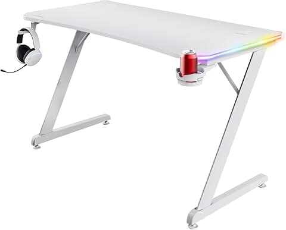
Trust Gaming GXT 709W Luminus – Bureau Gaming Blanc LED RGB
Table Gaming 120 x 60 cm avec 10 Modes LED, Support Casque & Porte-Gobelet USB ⚡🎮
Équipez votre setup gaming avec le Trust Gaming GXT 709W Luminus, un bureau moderne et fonctionnel conçu pour les gamers. Sa surface spacieuse de 120 x 60 cm offre un grand espace pour votre PC et accessoires. Doté de 10 modes de lumière LED RGB contrôlables, il crée une ambiance immersive. Pratique, il inclut un support casque et un porte-gobelet pour garder vos essentiels à portée de main. L’alimentation USB simplifie la gestion du câble.
Un bureau pensé pour le confort, le style et la performance gaming.
Caractéristiques clés :
🎨 10 modes d’éclairage LED RGB personnalisables
📏 Surface large 120 x 60 cm pour un espace de jeu optimisé
🎧 Support casque intégré pour un rangement pratique
🥤 Porte-gobelet pour garder vos boissons à portée de main
🔌 Alimentation par USB facile à brancher
💻 Design épuré blanc, idéal pour un setup gaming élégant
Le bureau qui transforme votre espace en véritable zone gaming immersive.
Voir l'offre
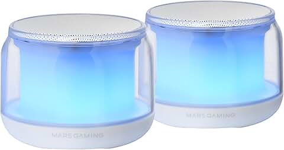
Mars Gaming MGC118BW – Chaise Gamer Ergonomique Réglable
Fauteuil Gaming en Simili-Cuir PU & Nylon – Design Blanc Moderne 🎮🪑
Alliez style épuré et confort maximal avec la chaise gamer Mars Gaming MGC118BW. Son revêtement en PU haut de gamme et sa structure en nylon résistant offrent durabilité et confort longue durée. Conçue pour épouser la forme du corps, elle propose une assise ergonomique, une hauteur réglable et un design blanc élégant qui s’intègre parfaitement à un setup moderne ou minimaliste.
Un fauteuil gaming à la fois performant, sobre et accessible.
Caractéristiques clés :
🪑 Design ergonomique pour un meilleur soutien du dos
🔝 Revêtement en simili-cuir PU résistant et facile à nettoyer
↕️ Hauteur de l’assise réglable pour s’adapter à votre morphologie
🎯 Structure solide en nylon pour une stabilité optimale
🎨 Finition blanche élégante, parfaite pour un setup épuré
🔄 Base pivotante à 360° pour plus de liberté de mouvement
Une chaise gamer fiable, confortable et au design raffiné pour les passionnés de jeux comme pour les pros du télétravail.
Voir l'offre
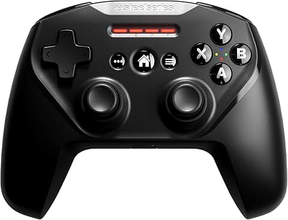
SteelSeries Nimbus+ – Manette Gaming Sans Fil
Contrôleur Bluetooth Rechargeable pour iPhone, iPad, iPod et Apple TV 🎮🍏
Jouez avec précision et confort sur tous vos appareils Apple grâce au SteelSeries Nimbus+. Cette manette sans fil offre une prise en main ergonomique, des boutons réactifs, et une autonomie longue durée pour des sessions de jeu sans interruption. Compatible avec iPhone, iPad, iPod et Apple TV, elle transforme votre expérience mobile en véritable console portable.
Un accessoire indispensable pour les gamers Apple.
Caractéristiques clés :
📱 Compatible avec iOS, iPadOS, tvOS (iPhone, iPad, iPod, Apple TV)
🔋 Batterie rechargeable intégrée – jusqu’à 50 heures d’autonomie
🎮 Disposition des boutons optimisée pour le confort et la réactivité
📦 Support téléphone inclus pour jouer en mobilité
🔗 Connexion Bluetooth stable et rapide
🧩 Idéal pour les jeux Apple Arcade et autres jeux mobiles compatibles
Transformez votre iPhone ou iPad en véritable console de jeu avec cette manette professionnelle.
Voir l'offre
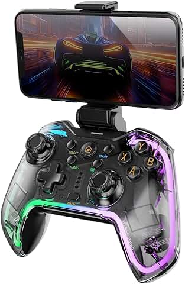
Mars Gaming MGP-BT2 – Manette Bluetooth 5.0 RGB Néon
Contrôleur Sans Fil avec Vibration Haptique, Gâchettes Analogiques, Macros & Support Smartphone 🎮✨
Jouez comme un pro avec la Mars Gaming MGP-BT2, une manette sans fil ultra-compatible au design transparent RGB néon. Dotée du Bluetooth 5.0, de gâchettes analogiques, de vibration haptique, et d’un support pour smartphone jusqu’à 7", elle offre une expérience immersive sur de nombreuses plateformes : PC, Android, iOS, Switch, PS3, PS4 et plus encore.
Une manette multifonction, au look futuriste et à la performance redoutable.
Caractéristiques clés :
🎮 Connexion Bluetooth 5.0 stable et rapide
🌈 Rétroéclairage RGB néon pour un look gaming vibrant
📱 Support intégré pour smartphone jusqu’à 7"
🎯 Gâchettes analogiques pour une précision accrue
🌀 Vibration haptique pour une immersion totale
⚙️ Fonctions macros programmables pour plus de contrôle
💻 Ultra-compatible : Switch / Switch 2 / PC / Android / iOS / PS3 / PS4
🧊 Boîtier transparent au style unique
Une manette puissante, stylée et prête à relever tous les défis gaming, sur tous vos écrans.
Voir l'offre
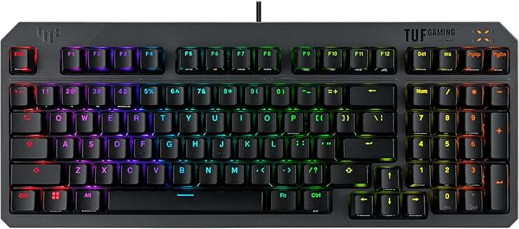
ASUS TUF Gaming K3 Gen II – Clavier Gamer Compact à 97 Touches
Switches Opto-Mécaniques RGB, Étanchéité IP57, Joint Silicone, Mousse Amortissante, Aura Sync – AZERTY 🇫🇷⌨️
Préparez-vous à dominer chaque partie avec le clavier ASUS TUF Gaming K3 Gen II. Compact et ultra-résistant, il est équipé de switches opto-mécaniques RGB pour une réactivité exceptionnelle, d’un joint en silicone et d’une mousse amortissante pour réduire les bruits de frappe. Avec sa plaque supérieure amovible, son éclairage Aura Sync personnalisable et sa certification IP57 contre la poussière et l’eau, il allie performance et durabilité dans un format AZERTY conçu pour les gamers exigeants.
Le clavier robuste et lumineux qui élève vos performances à un autre niveau. ⚔️
Caractéristiques clés :
🎮 Format compact à 97 touches pour plus d’espace de jeu
🔧 Switches opto-mécaniques ultra-réactifs et durables
🌈 Rétroéclairage RGB avec synchronisation Aura Sync
🔇 Joint en silicone & mousse amortissante pour frappe silencieuse
💧 Étanchéité IP57 : résistant à la poussière et aux éclaboussures
🪛 Plaque supérieure amovible pour un entretien facile
🇫🇷 Disposition AZERTY – idéale pour les gamers francophones
Un clavier pensé pour la vitesse, le confort et l’endurance, même dans les parties les plus intenses.
Voir l'offre
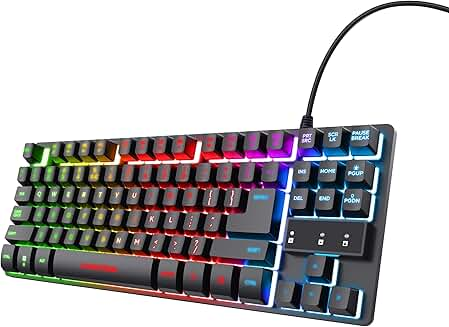
Trust Gaming GXT 833 Thado – Clavier Gamer Compact TKL RGB
ClaClavier Filaire 20% Plus Petit, Éclairage LED Multicolore, AZERTY Français – Plug & Play USB 💻🎮
Gagnez en place sans perdre en performance avec le Trust GXT 833 Thado, un clavier TKL (TenKeyLess) 20% plus compact, parfait pour les setups minimalistes ou les petits bureaux. Doté d’un éclairage LED multicolore, d’un design filaire fiable, et d’une disposition AZERTY française, il est prêt à l’emploi grâce à sa connectique USB Plug & Play.
Un clavier compact, coloré et performant pour les gamers qui vont à l’essentiel.
Caractéristiques clés :
⌨️ Format TKL (sans pavé numérique) – compact et pratique
🌈 Éclairage LED multicolore personnalisable
🔌 Connexion USB Plug & Play – aucun logiciel nécessaire
📏 20% plus petit qu’un clavier standard : plus d’espace pour la souris
🇫🇷 Disposition AZERTY française adaptée à tous les usages
🖥️ Compatible PC & ordinateurs portables sous Windows
Un clavier gaming simple, robuste et efficace, parfait pour les joueurs en quête de compacité et de style.vier Filaire 20% Plus Petit, Éclairage LED Multicolore, AZERTY Français – Plug & Play USB 💻🎮
Gagnez en place sans perdre en performance avec le Trust GXT 833 Thado, un clavier TKL (TenKeyLess) 20% plus compact, parfait pour les setups minimalistes ou les petits bureaux. Doté d’un éclairage LED multicolore, d’un design filaire fiable, et d’une disposition AZERTY française, il est prêt à l’emploi grâce à sa connectique USB Plug & Play.
Un clavier compact, coloré et performant pour les gamers qui vont à l’essentiel.
Caractéristiques clés :
⌨️ Format TKL (sans pavé numérique) – compact et pratique
🌈 Éclairage LED multicolore personnalisable
🔌 Connexion USB Plug & Play – aucun logiciel nécessaire
📏 20% plus petit qu’un clavier standard : plus d’espace pour la souris
🇫🇷 Disposition AZERTY française adaptée à tous les usages
🖥️ Compatible PC & ordinateurs portables sous Windows
Un clavier gaming simple, robuste et efficace, parfait pour les joueurs en quête de compacité et de style.
Voir l'offre
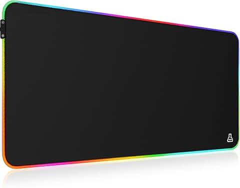
G-Lab Pad Rubidium – Tapis de Souris Gaming RGB XXL
Rétroéclairage LED 14 Modes, Surface Haute Précision, Hydrorésistant, Base Antidérapante – 800x300x4 mm 🎮🖱️
Améliorez votre précision et votre confort avec le tapis de souris G-Lab Pad Rubidium XXL. Sa surface optimisée offre un suivi ultra-précis pour tous vos mouvements, tandis que son rétroéclairage RGB à 14 modes personnalisables apporte une touche stylée à votre setup. Conçu pour durer, il est hydrorésistant et doté d’une base antidérapante qui assure une stabilité parfaite lors des sessions de jeu intenses.
Un tapis gaming large et lumineux, pensé pour les gamers exigeants.
Caractéristiques clés :
🎨 14 modes de rétroéclairage LED RGB personnalisables
🖱️ Surface optimisée pour une précision maximale
💧 Hydrorésistant pour une durabilité accrue
🛑 Base antidérapante pour une stabilité parfaite
📐 Dimensions XXL : 800 x 300 x 4 mm, idéal pour clavier et souris
🎮 Compatible PC, PS4, PS5, Xbox
Un tapis de souris gaming qui allie style, précision et robustesse pour booster vos performances.
Voir l'offre
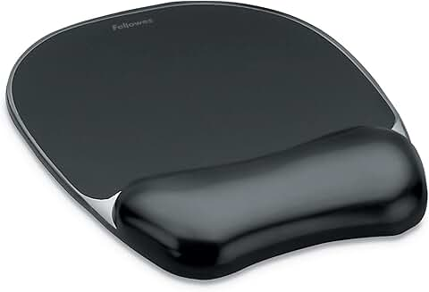
Fellowes – Tapis de Souris Ergonomique avec Repose-Poignet Crystal Gel
Gel Transparent Noir – Confort et Soutien Anti-fatigue pour Longues Sessions 💻🖱️
Offrez à vos poignets un confort optimal avec le tapis de souris Fellowes Crystal Gel. Son repose-poignet en gel ergonomique aide à réduire la fatigue et les tensions lors des longues heures passées devant l’écran. Le gel transparent noir apporte une touche élégante à votre espace de travail tout en offrant un soutien doux et efficace.
Un accessoire indispensable pour allier confort et performance au quotidien.
Caractéristiques clés :
🖐️ Repose-poignet en gel ergonomique pour soulager la pression
🎨 Gel transparent noir élégant et moderne
💻 Surface antidérapante pour un positionnement stable
⌨️ Compatible avec tous types de souris
⏳ Idéal pour prévenir la fatigue lors d’utilisation prolongée
Un tapis de souris qui prend soin de vos poignets tout en embellissant votre bureau.
Voir l'offre
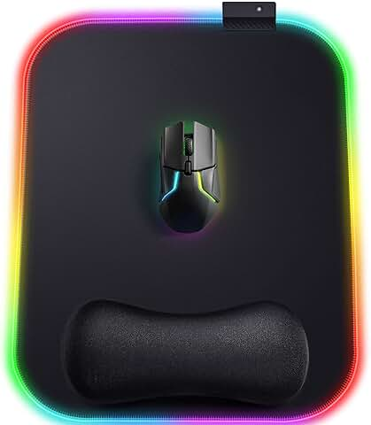
Gimars – Tapis de Souris Gaming RGB Ergonomique
XL 305x254 mm avec 10 Modes LED, Repose-Poignet en Gel, Base Antidérapante – Tissu Lycra 🎮🖱️
Boostez votre confort et votre style de jeu avec le tapis de souris Gimars RGB. Sa surface XL en tissu Lycra assure un glissement fluide et précis, tandis que le repose-poignet en gel offre un soutien ergonomique anti-fatigue. Profitez de 10 modes de lumière LED personnalisables pour une ambiance gaming immersive. Sa base en caoutchouc antidérapante garantit une stabilité parfaite pendant vos parties intenses.
Un tapis gaming ergonomique, stylé et performant.
Caractéristiques clés :
🎨 10 modes d’éclairage LED RGB pour personnaliser votre setup
🖱️ Surface XL 305 x 254 mm en tissu Lycra ultra-rapide et précise
🖐️ Repose-poignet en gel ergonomique pour réduire la fatigue
🛑 Base antidérapante en caoutchouc pour une stabilité optimale
🎮 Design pensé pour les gamers exigeants
Un accessoire essentiel pour allier confort et performance à chaque mouvement.
Voir l'offre
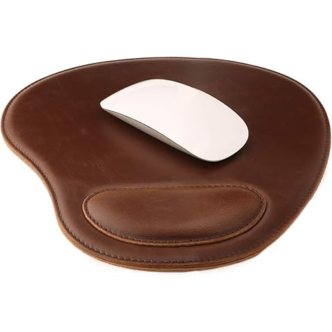
Londo – Tapis de Souris en Cuir Véritable avec Repose-Poignet Ergonomique
Confort Premium et Style Élégant pour Bureau et Gaming 🖱️🖤
Apportez élégance et confort à votre espace de travail avec le tapis de souris Londo en cuir véritable. Son repose-poignet ergonomique offre un soutien doux pour réduire la fatigue lors des longues sessions sur ordinateur. Alliant durabilité, toucher luxueux et design raffiné, ce tapis est parfait pour le bureau ou le gaming.
Le choix idéal pour ceux qui recherchent confort et style durable.
Caractéristiques clés :
🖐️ Repose-poignet ergonomique pour un confort optimal
🖤 Cuir véritable pour une finition premium et durable
🖱️ Surface lisse facilitant un déplacement précis de la souris
⌨️ Compatible avec tous types de souris
🎨 Design élégant et professionnel, parfait pour tout environnement
Un tapis de souris qui allie confort, robustesse et esthétique.
Voir l'offre
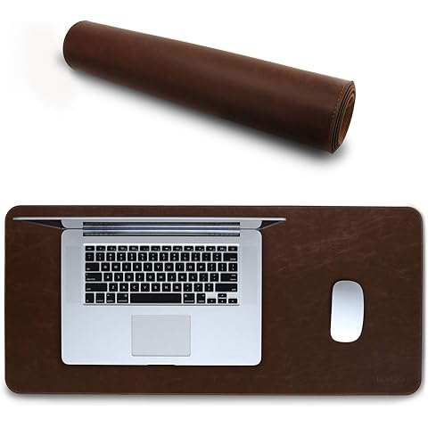
Londo – Tapis de Souris XXL en Cuir PU
Protecteur de Bureau Élégant avec Surface Lisse et Soyeuse – Grand Format 🖱️🧑💻
Protégez votre bureau avec style grâce au tapis de souris Londo en cuir PU. Avec son format extra-large, il couvre une grande surface pour accueillir clavier, souris, et autres accessoires tout en offrant une surface lisse et soyeuse pour un glissement optimal. Résistant et facile à nettoyer, il ajoute une touche élégante et professionnelle à tout espace de travail.
L’accessoire parfait pour allier confort, esthétique et protection.
Caractéristiques clés :
📏 Très grande taille : idéal pour couvrir toute la surface du bureau
🖤 Cuir PU de haute qualité – résistant, lisse et facile à nettoyer
🖱️ Surface soyeuse pour une glisse fluide de la souris
🛡️ Protège le bureau des rayures, taches et chaleur
🎨 Design raffiné adapté au bureau comme au gaming
Un tapis élégant et fonctionnel pour transformer votre espace de travail ou de jeu.
Voir l'offre
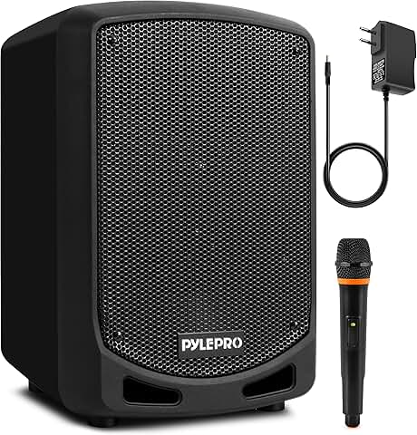
Pyle – Enceinte Sono Bluetooth Portable avec Microphone Sans Fil
Puissance Sonore, Enregistrement, USB/SD, Batterie Rechargeable – Idéale pour Fêtes et Événements 🎤🔊🎉
Mettez l’ambiance où que vous soyez avec la Pyle Enceinte Sono Bluetooth Puissante, conçue pour une utilisation intérieure et extérieure. Équipée d’un microphone sans fil, d’une batterie rechargeable, d’un lecteur USB/SD, et de la fonction d’enregistrement audio, elle est parfaite pour les fêtes, les karaokés, les discours et les événements.
Un son puissant et une liberté totale, pour faire vibrer chaque instant !
Caractéristiques clés :
🔊 Son haute puissance pour animer toutes vos soirées
🎤 Microphone sans fil inclus pour parler ou chanter librement
🔋 Batterie rechargeable longue durée pour une autonomie maximale
📁 Lecteurs USB & carte SD intégrés pour lire vos musiques préférées
🎙️ Fonction d’enregistrement audio intégrée
🧳 Design portable avec poignée pour un transport facile
🧷 Support de montage inclus pour une installation fixe si besoin
Parfaite pour les animateurs, les organisateurs d’événements et les passionnés de musique en plein air.
Voir l'offre
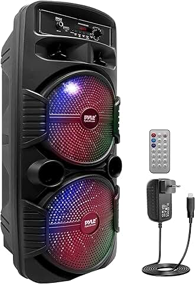
Pyle – Enceinte Bluetooth Portable Extérieure 600W
Double Caisson de Basses, Tweeter, Lumières LED, Micro, USB, Radio & Télécommande – Pour Fêtes et Animations 🔊🎶🎉
Faites monter le volume avec la Pyle Enceinte Sono 600W, idéale pour animer vos soirées à l’intérieur comme à l’extérieur. Dotée de deux caissons de basses puissants, d’un tweeter, d’un éclairage LED festif et d’une entrée micro, elle transforme chaque événement en show spectaculaire. Grâce à sa batterie rechargeable, son port USB, sa radio intégrée et sa télécommande, profitez d’une expérience sonore complète et mobile.
Le système audio parfait pour ceux qui aiment faire vibrer la foule ! 🔥
Caractéristiques clés :
🔊 Puissance de 600W – son clair et basses percutantes
🔈 Double caisson de basses + tweeter pour un rendu audio équilibré
🎤 Entrée micro pour chanter ou animer vos événements
🌈 Lumières LED intégrées pour une ambiance de fête garantie
🔋 Batterie rechargeable pour une liberté totale
📻 Radio FM intégrée + port USB pour lire votre musique
🕹️ Télécommande fournie pour un contrôle à distance
L’enceinte idéale pour soirées, barbecues, karaokés, événements sportifs et plus encore.
Voir l'offre

JBL Quantum 360X – Casque Gaming Sans Fil Bluetooth
Son JBL Quantum Signature, Autonomie 22h, Compatible Consoles – Coloris Noir 🎧🎮🖤
Plongez au cœur de l'action avec le JBL Quantum 360X, un casque gaming sans fil conçu pour les consoles. Grâce à son son signature JBL Quantum, chaque détail sonore devient une arme. Avec une autonomie de 22 heures, une connexion Bluetooth stable, et un design léger et confortable, ce casque vous accompagne dans toutes vos sessions, du jour comme de la nuit.
La précision sonore qui fait la différence sur le champ de bataille !
Caractéristiques clés :
🎧 Son JBL Quantum Signature pour une immersion totale
🔋 Jusqu’à 22h d’autonomie – jouez plus longtemps sans interruption
🎮 Compatibilité multi-plateforme : Xbox, PlayStation, Switch, PC
📡 Connexion sans fil Bluetooth rapide et stable
🖤 Design ergonomique, léger et confortable pour les longues sessions
🎙️ Micro avec clarté vocale pour une communication limpide
Un casque pensé pour la victoire, que ce soit sur console ou PC.
Voir l'offre
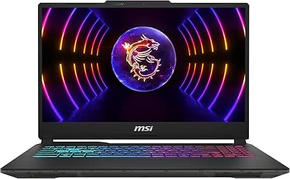
MSI Cyborg 15 A13VFK – PC Portable Gamer 15,6" FHD 144Hz
Intel Core i7-13620H · 16 Go DDR5 · SSD 512 Go · NVIDIA RTX 4060 8 Go · Windows 11 Home ⚔️💻🔥
Plongez dans l’univers du jeu haute performance avec le MSI Cyborg 15 A13VFK, un ordinateur portable pensé pour les gamers exigeants. Doté d’un processeur Intel Core i7-13620H, de 16 Go de RAM DDR5, d’un SSD ultra-rapide de 512 Go et de la puissante carte graphique NVIDIA GeForce RTX 4060 8 Go, il garantit des performances fluides, même dans les titres AAA les plus gourmands. Son écran Full HD 144Hz de 15,6” offre une immersion visuelle ultra-fluide, idéale pour les compétitions comme pour le plaisir.
Un design futuriste, une puissance brutale, un gameplay sans compromis. 🚀
Caractéristiques clés :
🧠 Processeur : Intel Core i7-13620H – 10 cœurs pour un multitâche rapide
🧬 Mémoire vive : 16 Go DDR5 – rapidité et efficacité
⚡ Stockage : SSD 512 Go – démarrage et chargement ultra-rapides
🎮 Carte graphique : NVIDIA GeForce RTX 4060 8 Go – ray tracing et IA pour une expérience gaming de nouvelle génération
🖥️ Écran : 15,6" Full HD – taux de rafraîchissement 144Hz pour un jeu fluide
🖱️ Clavier rétroéclairé – ambiance gaming stylée
🪟 Système : Windows 11 Home – moderne, fluide et sécurisé
🛡️ Châssis léger et design transparent – esthétique cyberpunk
Un véritable monstre de puissance mobile pour jouer, streamer, créer et performer où que vous soyez.
Voir l'offre
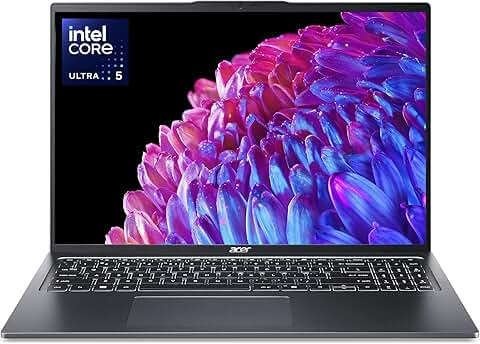
ACER Swift Go 16 – Ordinateur Ultra Portable 16" WQXGA IPS
Intel Core Ultra 5 125U · 16 Go RAM · SSD 512 Go · Intel Graphics · Windows 11 · Copilot intégré 💼💻✨
Alliez performance, élégance et mobilité avec le ACER Swift Go 16, un ultrabook nouvelle génération conçu pour les professionnels, les créatifs et les étudiants en mouvement. Équipé du processeur Intel Core Ultra 5 125U, de 16 Go de RAM, et d’un SSD rapide de 512 Go, il offre une réactivité parfaite pour la bureautique avancée, le multitâche ou la navigation intensive. Son grand écran 16" WQXGA IPS assure un confort visuel exceptionnel avec des images nettes et lumineuses.
Avec Copilot intégré sous Windows 11, vous profitez d'une assistance intelligente au quotidien. Le tout dans un design premium en métal ultra-fin et élégant.
Caractéristiques clés :
🧠 Processeur : Intel Core Ultra 5 125U – puissant et économe
💾 Mémoire : 16 Go de RAM – fluide pour le multitâche
⚡ Stockage : SSD 512 Go – démarrages et transferts ultra-rapides
🖥️ Écran : 16" WQXGA (2560 x 1600) IPS – grande surface d’affichage, résolution fine
🎨 Carte graphique : Intel Graphics – idéal pour les usages quotidiens
🤖 Copilot Windows 11 : assistant IA intégré pour gagner en productivité
💼 Finition métal : robuste, légère et professionnelle
🔋 Autonomie longue durée pour rester mobile toute la journée
Un laptop moderne, élégant et performant pour accompagner tous vos projets, où que vous soyez.
Voir l'offre

HP 250 G9 – Ordinateur Portable 15,6" Full HD
Intel Core i3-1215U · 8 Go RAM DDR4 · SSD 512 Go · Wi-Fi 5 – Performance et Simplicité 💻⚙️📚
Travaillez, étudiez et naviguez avec efficacité grâce au HP 250 G9, un PC portable fiable et fluide, idéal pour la bureautique, les cours en ligne ou les usages quotidiens. Propulsé par un processeur Intel Core i3-1215U, associé à 8 Go de RAM DDR4 et un SSD rapide de 512 Go, il garantit des performances équilibrées dans un design sobre et professionnel.
Un ordinateur abordable, efficace et prêt à vous accompagner partout.
Caractéristiques clés :
🧠 Processeur : Intel Core™ i3-1215U – 6 cœurs pour un usage polyvalent
💾 Mémoire vive : 8 Go DDR4 – multitâche fluide au quotidien
⚡ Stockage : SSD 512 Go – démarrage rapide et espace généreux
🖥️ Écran : 15,6" Full HD (1920 x 1080) – confort visuel optimal
📶 Connectivité : Wi-Fi 5 – navigation fluide et stable
🖱️ Pavé tactile large + clavier complet – ergonomie assurée
🪶 Design fin et professionnel – idéal pour l’école, le bureau ou la maison
Un choix malin pour allier productivité, fiabilité et prix accessible.
Voir l'offre

Acer Nitro V 15 – Ordinateur Portable Gaming 15,6" FHD 165Hz
AMD Ryzen 5 7535HS · NVIDIA GeForce RTX 4050 · 16 Go RAM · SSD 512 Go · Windows 11 · Clavier AZERTY 🎮💻🔥
Vivez une expérience de jeu immersive avec le Acer Nitro V 15, un laptop gaming taillé pour la performance. Avec son écran 15,6" Full HD IPS à 165Hz, il vous offre une fluidité visuelle exceptionnelle. Son processeur AMD Ryzen 5 de dernière génération, associé à une carte graphique NVIDIA GeForce RTX 4050, 16 Go de RAM et un SSD rapide de 512 Go, assure des performances solides pour les jeux, le streaming et la création.
Un design puissant, un gameplay fluide, une machine prête pour la compétition.
Caractéristiques clés :
🧠 Processeur : AMD Ryzen 5 7535HS – rapide et multitâche
🎮 Carte graphique : NVIDIA GeForce RTX 4050 – ray tracing & IA pour des jeux ultra-réalistes
⚡ Mémoire vive : 16 Go RAM – parfait pour le multitâche et les jeux exigeants
💾 Stockage : SSD 512 Go – chargement rapide, système réactif
🖥️ Écran : 15,6" Full HD IPS, 165Hz – fluidité et détails visuels impressionnants
⌨️ Clavier AZERTY rétroéclairé – ergonomie et style gaming
🪟 Windows 11 Home préinstallé – moderne, sécurisé, intuitif
🎨 Design noir sobre & agressif – pour les vrais gamers
Le partenaire idéal pour jouer sans compromis, partout et à tout moment.
Voir l'offre
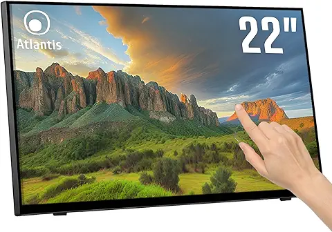
Atlantis A05-T22A-VHDM – Moniteur Tactile 22” Full HD Multitouch
Écran 10 points tactile · HDMI / VGA / DP · Verre de protection 7H · Inclinable · VESA 100 🖥️👆📊
Améliorez votre confort d’utilisation et votre productivité avec le moniteur tactile Atlantis A05-T22A-VHDM. Doté d’un écran tactile 10 points Full HD, ce moniteur de 22 pouces offre une interaction fluide et précise. Idéal pour les points de vente, les environnements professionnels ou un usage personnel tactile. Son verre de protection 7H, son grand angle de vision (178°/178°) et sa compatibilité VESA 100 en font un écran robuste, flexible et fiable.
L’allié tactile idéal pour vos besoins interactifs et professionnels.
Caractéristiques clés :
🖐️ Tactile 10 points – réactivité parfaite pour une utilisation multitouch
🖥️ Écran 22" Full HD (1920x1080) – image nette et confortable
🔗 Connectique complète : HDMI, VGA, DisplayPort
📐 Inclinable de 15° à 50° – ajustement facile pour votre confort
🛡️ Verre trempé 7H – protection contre les rayures et les chocs
🎯 Contraste 1000:1 – bon rendu des détails
👁️ Angles de vision 178°/178° – visibilité parfaite sous tous les angles
🖼️ Fixation VESA 100x100 mm – installation murale ou sur bras facile
Un moniteur tactile professionnel fiable, robuste et ergonomique pour tous vos projets interactifs.
Voir l'offre
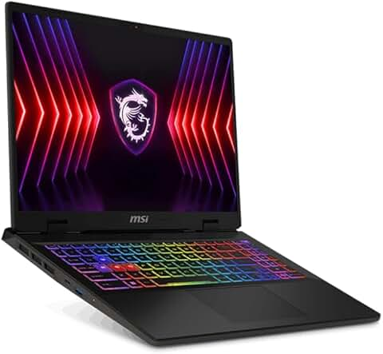
MSI Sword 16 HX – Ordinateur Portable Gamer 16" Full HD 144Hz
Intel Core i7-14650HX · 16 Go DDR5 · SSD 1 To · NVIDIA RTX 4070 8 Go · Windows 11 Famille ⚔️💻🎮
Prépare-toi à affronter tous les jeux sans compromis avec le MSI Sword 16 HX, un véritable monstre de puissance conçu pour les gamers exigeants. Propulsé par le processeur Intel Core i7-14650HX et la carte graphique NVIDIA GeForce RTX 4070, ce laptop allie vitesse, fluidité et graphismes ultra-réalistes. Son écran 16” Full HD à 144Hz te plonge dans une action fluide et immersive, le tout avec un design affûté et un clavier gaming rétroéclairé.
Une machine taillée pour la victoire.
Caractéristiques clés :
🧠 Processeur : Intel Core i7-14650HX – performances extrêmes pour gaming et multitâche
⚡ RAM : 16 Go DDR5 – ultra-rapide pour tout type d’usage intensif
💾 Stockage : SSD 1 To – vitesse d’exécution et espace de stockage généreux
🎮 Carte graphique : NVIDIA GeForce RTX 4070 8 Go – ray tracing, IA, FPS ultra-fluides
🖥️ Écran : 16" Full HD (1920x1200) – 144Hz, fluidité visuelle parfaite
🎨 Design gamer : look épuré, finitions puissantes et clavier rétroéclairé
🪟 Système : Windows 11 Famille – moderne, intuitif et optimisé
🛡️ Refroidissement efficace pour garder les performances maximales
Que ce soit pour jouer, streamer, ou créer, le MSI Sword 16 HX est prêt à tout trancher sur son passage. ⚔️🔥
Voir l'offre
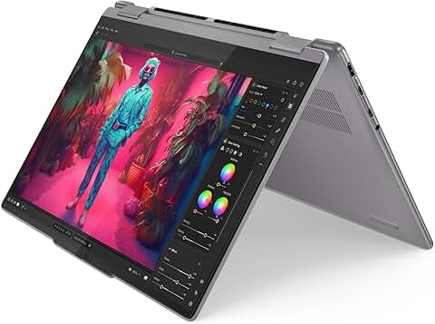
Lenovo Yoga 7 14AHP9 – Ordinateur Portable 2-en-1 14" OLED Tactile
AMD Ryzen 5 8640HS · 16 Go RAM · SSD 512 Go · Écran WUXGA OLED · AMD Radeon 760M · Windows 11 · Clavier rétroéclairé AZERTY 🔁🧠💻✨
Alliez puissance, flexibilité et intelligence avec le Lenovo Yoga 7 14AHP9, un PC 2-en-1 convertible doté d’un écran tactile OLED WUXGA d’une qualité exceptionnelle. Grâce à son processeur AMD Ryzen 5 8640HS avec capacités IA, ses 16 Go de RAM et son SSD rapide de 512 Go, il assure une expérience fluide pour le travail, la créativité et le divertissement. Sa charnière rotative à 360° permet de passer en mode tablette, tente ou laptop, selon vos besoins.
Un design fin, élégant et intelligent, pensé pour le quotidien moderne.
Caractéristiques clés :
🧠 Processeur : AMD Ryzen 5 8640HS – puissant, rapide et optimisé par l’IA
🎨 Écran : 14" OLED WUXGA tactile (1920 x 1200) – couleurs éclatantes, contraste infini
🔁 Convertible 2-en-1 : utilisez-le comme un PC ou une tablette
💾 Stockage : SSD 512 Go – démarrage rapide et stockage généreux
⚡ RAM : 16 Go – multitâche fluide pour toutes vos applications
🖥️ Carte graphique : AMD Radeon 760M – idéale pour un usage créatif ou multimédia
🌙 Clavier rétroéclairé AZERTY – confort d’utilisation même de nuit
🪟 Windows 11 Home – moderne, intelligent, sécurisé
🎨 Design en aluminium – fin, élégant, portable
Un PC tactile et intelligent, parfait pour les créateurs, étudiants et professionnels en mouvement. ✨🖊️
Voir l'offre
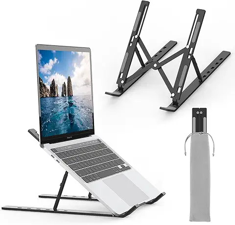
GRIFEMA GB1054B – Support PC Portable Réglable et Pliable en Aluminium
6 Niveaux de Hauteur · Léger et Stable · Compatible 10 à 17,3" · Design Élégant Noir 🖥️📏💼
Améliorez votre posture et votre confort de travail avec le support pour ordinateur portable GRIFEMA GB1054B. Grâce à ses 6 niveaux de réglage en hauteur, ce support en aluminium robuste et léger est compatible avec tous les ordinateurs de 10 à 17,3 pouces. Son design pliable et compact permet de l’emmener partout, que ce soit au bureau, à la maison ou en déplacement.
L’accessoire indispensable pour allier ergonomie, productivité et mobilité. ✨
Caractéristiques clés :
📐 Réglable sur 6 niveaux – adaptez l’angle pour un confort optimal
💻 Compatibilité universelle – MacBook, Dell, HP, Lenovo, etc. de 10 à 17,3"
🪶 Structure en aluminium – solide, légère et élégante
📦 Pliable et portable – facile à transporter dans un sac
🔒 Design antidérapant – stabilité assurée même en usage intensif
♻️ Ventilation naturelle – favorise le refroidissement de votre PC
Un support ergonomique et intelligent, parfait pour le télétravail, les étudiants et les pros nomades. 🧑💻🌍
Voir l'offre
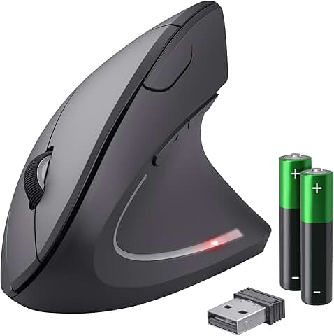
Trust Verto – Souris Sans Fil Ergonomique Verticale
800-1600 DPI · 6 Boutons · LED intégrée · Prévention des douleurs · Pour droitier · PC & Mac · Piles incluses 🖱️👌💡
Adoptez une posture naturelle avec la souris verticale sans fil Trust Verto, conçue pour réduire la tension musculaire et prévenir le syndrome de la souris et l’épicondylite (douleur au coude). Grâce à sa forme ergonomique verticale, elle assure une prise en main confortable, même après de longues heures de travail. Dotée de 6 boutons, d’un réglage de sensibilité DPI (800 à 1600) et d’un éclairage LED stylé, elle offre à la fois confort et performance.
Un allié santé au bureau comme à la maison ! 💪🖥️
Caractéristiques clés :
🖐️ Design vertical ergonomique – posture naturelle du poignet
🎯 Sensibilité ajustable : 800 / 1200 / 1600 DPI – précision personnalisée
🔘 6 boutons – commandes pratiques à portée de main
🔋 Fonctionnement sans fil – liberté de mouvement, piles incluses
💡 Éclairage LED – look moderne et professionnel
🧠 Prévention douleurs – réduit la tension musculaire et les troubles RSI
💻 Compatibilité universelle – PC, Mac, ordinateur portable
✋ Pour droitier uniquement
Une souris pensée pour votre bien-être et votre productivité au quotidien !
Voir l'offre
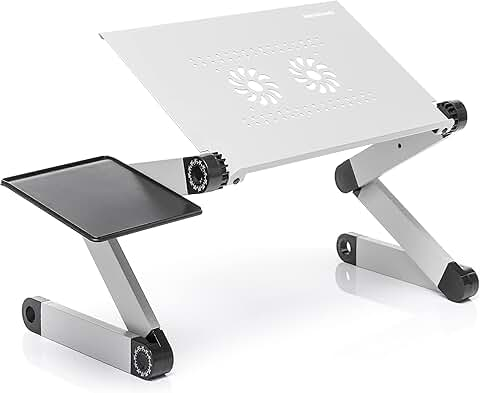
InnovaGoods – Table PC Portable Réglable en Aluminium
Support inclinable pour lit ou canapé · Ventilation intégrée · Hauteur ajustable · Pliable et léger · Coloris Argent 🛏️💻🌬️
Travaillez ou regardez vos séries préférées confortablement installé au lit ou sur le canapé avec la table réglable pour ordinateur portable InnovaGoods. Son design pliable en aluminium léger, son plateau inclinable avec ventilation intégrée et ses pieds réglables en hauteur vous offrent un confort ergonomique optimal à tout moment.
Un support multifonction pensé pour la productivité et le bien-être à la maison. 🏠✨
Caractéristiques clés :
🖥️ Plateau ajustable – inclinaison et hauteur personnalisables
🌬️ Ventilation intégrée – garde votre ordinateur au frais
🔧 Structure en aluminium – légère, robuste et moderne
🛋️ Utilisation polyvalente – au lit, sur le canapé, au sol, etc.
📦 Design pliable – facile à transporter et à ranger
⚙️ Montage simple & rapide – aucun outil nécessaire
🪑 Format Médiano – idéal pour la majorité des ordinateurs portables
L’accessoire pratique et ergonomique pour travailler où vous voulez, quand vous voulez ! 💼🔥
Voir l'offre
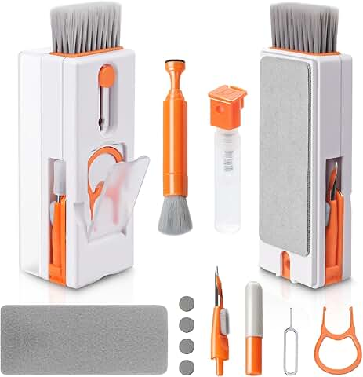
Alyvisun – Kit de Nettoyage Clavier 11 en 1 Multifonction
Brosse & Outils pour Clavier, PC, Tablette, Téléphones, Écouteurs · Format Compact · Couleur Orange 🧼⌨️📱🧹
Gardez tous vos appareils impeccables avec le kit de nettoyage Alyvisun 11 en 1, un ensemble complet d’outils pour entretenir facilement vos claviers, téléphones, tablettes, écouteurs et plus encore. Grâce à ses brosses fines, pinceaux, pointes de précision et accessoires de nettoyage, même les recoins les plus inaccessibles deviennent faciles à entretenir.
Un kit malin, compact et coloré pour une propreté parfaite au quotidien ! 🧽✨
Caractéristiques clés :
🧹 11 outils en 1 – nettoyage complet et polyvalent
🖱️ Spécial claviers & PC portables – retire la poussière entre les touches
🎧 Accessoires pour écouteurs & ports USB – nettoyage en douceur et précision
📱 Compatible smartphones & tablettes – entretien des écrans et bords
🧼 Brosses, embouts, chiffons doux – tous les outils nécessaires à portée de main
🎨 Format compact & couleur vive (orange) – facile à repérer et transporter
♻️ Réutilisable & durable – pour une hygiène régulière et écologique
Un incontournable pour garder ton espace de travail propre et fonctionnel ! 💻🧼🎯
Voir l'offre

Voir l'offre
Voir l'offre
Voir l'offre
Voir l'offre
Voir l'offre
Voir l'offre
Voir l'offre
Voir l'offre
Voir l'offre
Voir l'offre
Voir l'offre
Voir l'offre